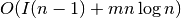
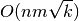
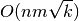
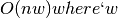

current_flow_betweenness_centrality¶
- current_flow_betweenness_centrality(G, normalized=True, weight='weight', dtype=<type 'float'>, solver='full')¶
Compute current-flow betweenness centrality for nodes.
Current-flow betweenness centrality uses an electrical current model for information spreading in contrast to betweenness centrality which uses shortest paths.
Current-flow betweenness centrality is also known as random-walk betweenness centrality [R146].
Parameters : G : graph
A NetworkX graph
normalized : bool, optional (default=True)
If True the betweenness values are normalized by 2/[(n-1)(n-2)] where n is the number of nodes in G.
weight : string or None, optional (default=’weight’)
Key for edge data used as the edge weight. If None, then use 1 as each edge weight.
dtype: data type (float) :
Default data type for internal matrices. Set to np.float32 for lower memory consumption.
solver: string (default=’lu’) :
Type of linear solver to use for computing the flow matrix. Options are “full” (uses most memory), “lu” (recommended), and “cg” (uses least memory).
Returns : nodes : dictionary
Dictionary of nodes with betweenness centrality as the value.
See also
approximate_current_flow_betweenness_centrality, betweenness_centrality, edge_betweenness_centrality, edge_current_flow_betweenness_centrality
Notes
Current-flow betweenness can be computed in  time [R145], where
 is the time needed to compute the
inverse Laplacian. For a full matrix this is
is the time needed to compute the
inverse Laplacian. For a full matrix this is  but using
sparse methods you can achieve  where
but using
sparse methods you can achieve  where  is the
Laplacian matrix condition number.
is the
Laplacian matrix condition number.The space required is  is the width of the sparse Laplacian matrix. Worse case is for
 .
.If the edges have a ‘weight’ attribute they will be used as weights in this algorithm. Unspecified weights are set to 1.
References
[R145] (1, 2) Centrality Measures Based on Current Flow. Ulrik Brandes and Daniel Fleischer, Proc. 22nd Symp. Theoretical Aspects of Computer Science (STACS ‘05). LNCS 3404, pp. 533-544. Springer-Verlag, 2005. http://www.inf.uni-konstanz.de/algo/publications/bf-cmbcf-05.pdf [R146] (1, 2) A measure of betweenness centrality based on random walks, M. E. J. Newman, Social Networks 27, 39-54 (2005).